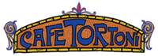
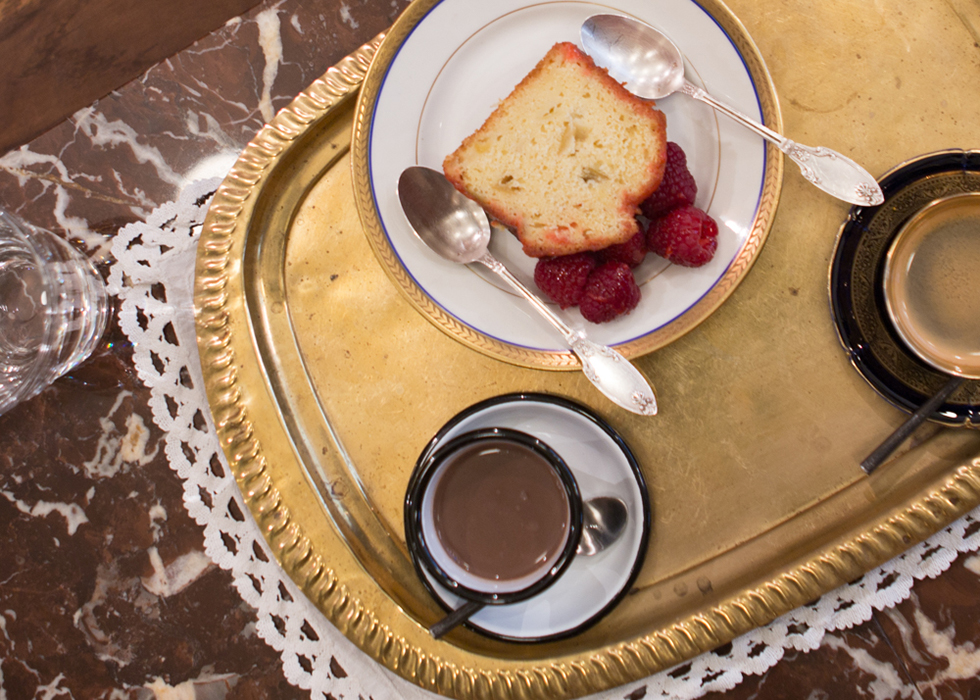
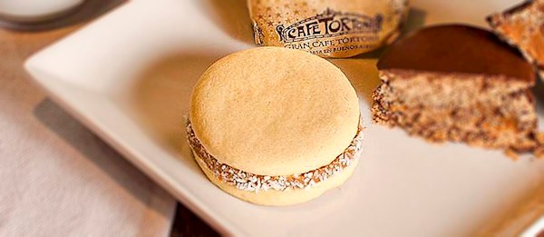

Mini Breakfast Menu

Cafeteria
- Cafe Espresso
- Cafe Espresso doble
- Cafe Espresso en jarrito
- Capuccino (cafe, leche, crema, canela)
- Cafe con leche
- Submarino
- Chocolate
- Chocolate con churros
- Chocolate espeso
- Te en saquito
- Te helado hibiscus
- Adicional leche de almendras
- Cafe con Leche con 2 medialunas

Desayunos y Meriendas
- Tortoni (Café con leche, porción de torta, tostado mixto, copa de jugo de Naranja exprimido)
- Continental (Café con leche, tostadas, Manteca y dulce de leche o queso blanco y mermelada, copa de jugo de Naranja exprimido)
- Light (Café con leche, yogurt con granola y frutillas, copa de jugo de Naranja exprimido)
- Té del Atardecer (2 infusiones, 2 copas de jugo de Naranja exprinido, tostado mixto alfajor, brownie, 2 medialunas, 2 churros, tostadoas, Manteca y mermelada)

Postres
- Frutillas con Crema
- Helado (2 bochas)
- Ensalads de frutas
- Brownie con helado
- Torta de manzana caliente con helado
- Copa pinocho (Helado de crema, dulce de leche, galletitas de chcolate, bano de chocolate)
- Flan casero
- Adicional crema o dulce de leche